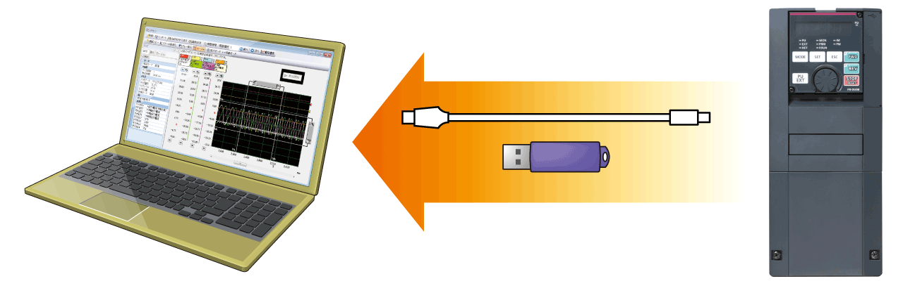

Inverters-FREQROL FR-A800 Series SECURITY & SAFETY

SECURITY & SAFETY
Swift recovery ensured by preventing trouble beforehand.
The FR-A800 has been developed with reliability and safety foremost in mind.
Rapid response is obtained when an unexpected trouble occurs.
Improved system safety
Safety standards compliance NEW
Controls with safety functions can be easily performed.
The Safe Torque Off (STO) safety function is supported by the inverter. The inverter with the safety function can comply with the safety standards without incurring much expenses.
● PLe and SIL3 are supported as standard.
- ISO13849-1:2015 Category 3/PLe
- IEC62061:2015 / IEC61800-5-2:2016 / IEC61508:2010 SIL3
- *1Safety communication is available between a safety programmable controller and a remote I/O module.
- *2One MC is required to shut off the power at an activation of the protective function.
Reliable and secure maintenance
Standard 24 VDC power supply for the control circuit NEW
In addition to the existing power supply input terminals (R1 and S1) of the control circuit, 24 VDC input is equipped as standard.
The 24 VDC power supplied from outside can be fed to the control circuit locally, enabling the parameter settings, communication operation and safety maintenance without turning ON the main power.
Prevention of trouble with temperature monitoring NEW
The inverter is equipped with an internal temperature sensor, which outputs a signal when the ambient temperature is high.
This facilitates the detection of rises in temperature inside the inverter following cooling fan malfunction, or rises in ambient temperature due to inverter operating conditions.
Long life components and life check function
Long life components
- The service life of the cooling fans is now 10 years*3.
The service life can be further extended by ON/OFF control of the cooling fan. - Capacitors with a design life of 10 years*3*4are adapted.
With these capacitors, the service of the inverter is further extended. - Estimated service lifespan of the long-life parts.
| Components | Estimated lifespan of the FR-A800*3 | Guideline of JEMA*5 |
|---|---|---|
| Cooling fan | 10 years | 2 to 3 years |
| Main circuit smoothing capacitor | 10 years*4 | 5 years |
| Printed board smoothing capacitor | 10 years*4 | 5 years |
- *3Surrounding air temperature: Annual average of 40˚C (free from corrosive gas, flammable gas, oil mist, dust and dirt).
The design life is a calculated value from the LD rating and is not a guaranteed product life. - *4Output current: 80% of the inverter LD rating
- *5Excerpts from “Periodic check of the transistorized inverter” of JEMA (Japan Electrical Manufacturer’s Association).
Enhanced life diagnosis function
- An internal thermal sensor is equipped to all inverters as standard, which enables monitoring of the installation environment.
Use this function as a guide for the life diagnosis. NEW - Maintenance timers are available for up to three peripheral devices, such as motor and bearing.
"Maintenance 1 output" warning
Quick reaction to troubles
Easy fault diagnosis NEW
- The operating status (output frequency, etc.) immediately before the protection function activates can be stored in the inverter built-in RAM with the trace function. The stored data (trace data) can be copied to a USB memory device or directly imported to a computer, facilitating trouble analysis using the inverter setup software (FR Configurator2).
Trace data stored in the built-in RAM is deleted when the power is turned OFF or the inverter is reset.
 - Clock setting is now available in addition to the already-available cumulative energization time. The time and date at a protective function activation are easily identified. (The clock is reset at power-OFF.) The date and time are also saved with the trace data, making the fault analysis easier.
By using the real-time clock function with the optional liquid crystal display (LCD) operation panel (FR-LU08) (when using battery), the time is not reset even when the power supply is turned OFF.
Backup/restore NEW
The GOT can be used for backing up inverter's parameter settings and the data used in the PLC function of inverter, and the backup stored in the GOT can be used to restore the data in the inverter.
Renewal assurance
Intercompatibility with existing models
- The inverter installation method is the same as that for the FR-A700 series, eliminating any concerns over replacement.
Furthermore, FR-A700 series control circuit terminal blocks can be installed with the use of an option (FR-A8TAT). - The terminal response adjustment function allows a user to adjust the response speed in accordance with the existing facility. NEW
- The conversion function of Inverter Setup Software (FR Configurator2) enables parameter copy from an FR-A700 and even from an FR-A500 (to be supported soon).
Reasons for high quality
Design considering the hazardous environment
3D-vibration analysis is performed to confirm the vibration resistance. The analysis is also useful to find the best layout position and to further improve the product's rigidity.
Assuming a hazardous service condition, the product reliability is thoroughly assessed in the design stage. Every effort is made to ensure the best quality of the Mitsubishi Electric inverter.*6
3D-vibration analysis
Heat control for high quality
Resistance against heat is what makes an inverter reliable.
A well-designed heat-resistant power module is essential in a reliable inverter. From the power module's design stage, its heat resistance is carefully considered.*6
Hydraulic analysis and heat simulation
*6The usage beyond the product's specified service condition is not guaranteed.